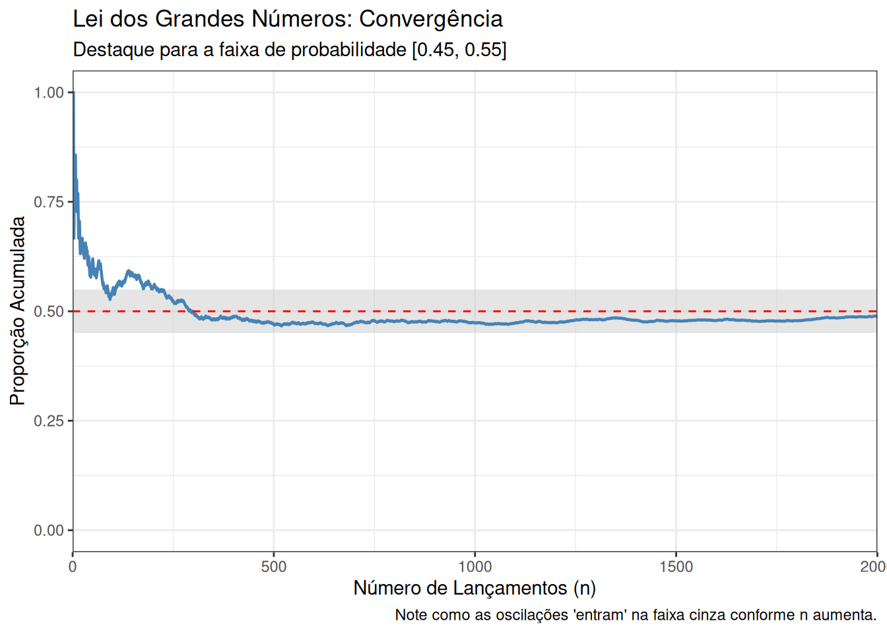

O que é a estatística? A estatística é a ciência que se preocupa com a coleta, organização, análise e interpretação de dados para transformar dados em conhecimento. Ela fornece as ferramentas essenciais para quantificar a incerteza e reduzir as suposições em diversos contextos. Didaticamente, ela é dividida em três grandes áreas:
Coleta de Dados: Planejamento de esquemas amostrais e desenhos experimentais para garantir que a amostra seja representativa da população.
Estatística Descritiva: Uso de métodos numéricos e gráficos para resumir e apresentar as características de uma amostra observada.
Estatística Inferencial: O uso da teoria das probabilidades para tirar conclusões, fazer estimativas e testar hipóteses sobre uma população maior com base apenas nos dados de uma amostra.
Os procedimentos estatísticos são partes integrantes do Método Científico, defendido inicialmente por Sir Francis Bacon (1561-1626), que afirmava que “aprender os segredos da natureza envolve coletar dados e realizar experimentos”.
A metodologia moderna:
Observação: Notar um fenômeno no mundo real.
Formulação de Hipótese: Criar uma explicação teórica para o fenômeno.
Coleta de Dados: Realizar amostragem ou experimentos controlados.
Teste Estatístico: Verificar se a evidência dos dados suporta a hipótese com o mínimo de risco.
Conclusão: Aceitar, rejeitar ou refinar a hipótese original.
“As estatísticas não mentem, mas os mentirosos usam estatísticas.” — Mark Twain.
3.2 O que é a Estatística Matemática?
É o estudo dos fundamentos teóricos que sustentam e justificam os métodos utilizados para descrever e analisar dados. Enquanto a prática estatística lida com a aplicação, a estatística matemática utiliza a teoria da probabilidade para provar por que certos procedimentos funcionam e quais são suas propriedades ideais.
O que é uma estatística?
Uma estatística é qualquer função real da amostra aleatória que não depende de parâmetros desconhecidos. Se \(X_{1},X_{2},...,X_{n}\) representam as variáveis aleatórias da amostra, uma estatística \(T\) é denotada por:
\[T=g(X_{1},X_{2},...,X_{n})\] Como seus argumentos são variáveis aleatórias, a estatística \(T\) é, ela própria, uma variável aleatória antes de os dados serem coletados, possuindo assim sua própria distribuição de probabilidade, chamada de distribuição amostral.
População vs. Amostra
População: O conjunto total de todos os indivíduos, objetos ou medidas de interesse que compartilham uma característica comum. Pode ser existente (ex: todos os brasileiros) ou conceitual (ex: todas as medições futuras de um sensor).
Amostra: Um subconjunto da população selecionado para estudo. Geralmente, utilizamos amostras porque realizar um censo (contar toda a população) é caro demais em termos de tempo e dinheiro.
Parâmetro vs. Estatística
Parâmetro: Valor numérico fixo e geralmente desconhecido que descreve uma característica da população ou de um modelo teórico.
Média populacional:\(\mu = \sum xP(x) \quad \text{ou} \quad \int xf(x)dx\) (O centro de massa da distribuição teórica).
Variância populacional:\(\sigma^{2} = \sum (x-\mu)^{2}P(x) \quad \text{ou} \quad \int (x-\mu)^{2}f(x)dx\) (Medida da dispersão dos dados na população).
Proporção populacional:\(p\) é a verdadeira proporção de 1s na população (A fração real de sucessos na população total).
Mediana populacional:\(\phi_{.5}\) é o valor tal que \(P(X \le \phi_{.5}) \ge .5\) e \(P(X \ge \phi_{.5}) \ge .5\).
Estatística: Valor numérico calculado a partir dos dados da amostra. É uma variável aleatória que varia de amostra para amostra.
Média amostral:\(\overline{X}=\frac{1}{n}\sum_{i=1}^{n}X_{i}\) (Principal estimador da média populacional).
Variância amostral:\(S^{2}=\frac{1}{n-1}\sum_{i=1}^{n}(X_{i}-\overline{X})^{2}\) (Utiliza-se geralmente o divisor \((n−1)\) para ser um estimador não-viesado da variância populacional).
Proporção amostral:\(\hat{p} = \frac{\text{número de 1s}}{n}\).
Mediana amostral:\(\hat{\phi}_{.5} = \text{valor central (ou média dos centrais)}\).
Definição 2: Amostra Aleatória:
A variáveis aleatórias \(X_1, X_2, \dots, X_n\) são chamadas de amostra aleatória e de tamanho \(n\) da população \(f(x)\) se \(X_1, X_2, \dots, X_n\) são variáveis aleatórias mutuamente independentes e a função densidade de probabilidade (FDP) (ou função de probabilidade (FP)) marginal de cada \(X_i\) é a mesma função \(f(x)\). Alternativamente, \(X_1, X_2, \dots, X_n\) são chamadas de variáveis aleatórias independentes e identicamente distribuídas com FDP (ou FP) \(f(x)\). Sendo comumente abreviado para variáveis aleatórias i.i.d (Casella; Berger, 2002).
3.3 Amostragem Aleatória Simples (AAS)
Quando estudamos uma variável de interesse cuja distribuição de probabilidade populacional é descrita por \(f(x)\), uma única observação \(X\) permite calcular probabilidades teóricas baseadas nessa função. No entanto, a inferência estatística baseia-se na repetição desse experimento para obter um conjunto de \(n\) observações, denotado por \(\mathbf{X} = (X_1, X_2, \ldots, X_n)\).
Para que as conclusões obtidas a partir desse conjunto sejam generalizáveis para a população, adotamos o modelo de AAS, que exige que as variáveis da amostra sejam i.i.d.:
Mutuamente Independentes: O valor assumido por uma observação não exerce qualquer influência ou relação com as demais. Matematicamente, a independência garante que a FDP conjunta (ou função de probabilidade conjunta, no caso discreto) seja o produto das densidades marginais:
Identicamente Distribuídas: Como cada \(X_i\) é extraído da mesma população (ou PGD), todas as densidades marginais \(f(x_i)\) seguem a mesma regra funcional \(f(x)\), possuindo, portanto, os mesmos parâmetros populacionais, como a média (\(\mu\)) e variância (\(\sigma^2\)).
3.4 O Modelo Paramétrico e a Verossimilhança
Na maioria dos problemas inferenciais, a FDP da população pertence a uma família paramétrica \(\{f(x;\theta): \theta \in \Theta\}\), onde a forma da distribuição é conhecida, mas o parâmetro \(\theta\) é desconhecido. Nesse contexto, a densidade conjunta da amostra é expressa como:
Quando os dados da amostra \(\mathbf{x}\) são coletados e mantidos fixos, e passamos a tratar essa expressão como uma função do parâmetro \(\theta\), ela recebe o nome de função de verossimilhança (\(L(\theta;\mathbf{x})\)). A verossimilhança é o pilar central que permite identificar quais valores de θ são mais compatíveis com a realidade observada, servindo de base para a construção de estimadores e testes de hipóteses.
Exemplo 1
Sejam \(X_1,\ldots,X_n\) uma amostra aleatória de uma população exponencial\((\beta)\). Especificamente, \(X_1,\ldots,X_n\) podem corresponder aos tempos até a falha (medidos em anos) de \(n\) placas de circuito idênticas que são colocadas em teste e usadas até falharem.
Essa FDP pode ser usada para responder perguntas sobre a amostra. Por exemplo, qual é a probabilidade de que todas as placas durem mais de 2 anos?
Resposta:
3.5 Diferentes maneiras de coletar uma amostra
O modelo de amostragem aleatória da Definição 1 é algumas vezes chamado de amostragem de uma população infinita. Pense em obter os valores de \(X_1,\ldots,X_n\) sequencialmente. Primeiro, o experimento é realizado e \(X_1=x_1\) é observado. Em seguida, o experimento é repetido e \(X_2=x_2\) é observado.
A suposição de independência na amostragem aleatória implica que a distribuição de probabilidade de \(X_2\) não é afetada pelo fato de que \(X_1=x_1\) foi observado primeiro. “Remover” \(x_1\) de uma população infinita não altera a população, de modo que \(X_2=x_2\) ainda é uma observação aleatória proveniente da mesma população.
Quando a amostragem é feita a partir de uma população finita, a Definição 1 pode ou não ser relevante, dependendo de como os dados são coletados. Uma população finita é um conjunto finito de números, \(\{x_1,\ldots,x_N\}\). Uma amostra \(X_1,\ldots,X_n\) deve ser extraída dessa população. Essas amostras podem ser obtidas de quatro maneiras diferentes. Podemos resumir as quatro situações na Tabela 1 a seguir:
Tipo de seleção
Sem reposição
Com reposição
Ordenado
\(\frac{n!}{(n-r)!}\)
\(n^r\)
Não ordenado
\(\binom{n}{r}\)
\(\binom{n+r-1}{r}\)
Tabela 1: Número de possíveis arranjos de tamanho \(r\) a partir de \(n\) objetos.
Neste material iremos considera apenas dois casos: i) ordenado sem reposição e ii) Ordenado com reposição. Para maiores detalhes, ver Casella; Berger (2002).
Suponha que um valor seja escolhido da população de tal forma que cada um dos \(N\) valores tenha a mesma probabilidade \((1/N)\) de ser selecionado (pense em retirar números de uma urna). Esse valor é registrado como \(X_1=x_1\). Em seguida, o processo é repetido. Novamente, cada um dos \(N\) valores tem a mesma probabilidade de ser escolhido. O segundo valor selecionado é registrado como \(X_2=x_2\) (Se o mesmo número for escolhido, então \(x_1=x_2\)).
Esse processo de sorteio entre os \(N\) valores é repetido \(n\) vezes, produzindo a amostra \(X_1,\ldots,X_n\). Esse tipo de amostragem é chamado com reposição, porque o valor escolhido em qualquer etapa é “reposto” na população e fica disponível para ser escolhido novamente na etapa seguinte. Para esse tipo de amostragem, as condições da Definição 1 são satisfeitas.
Cada \(X_i\) é uma variável aleatória discreta que assume cada um dos valores \(x_1,\ldots,x_N\) com probabilidade igual. As variáveis aleatórias \(X_1,\ldots,X_n\) são independentes porque o processo de escolha de qualquer \(X_i\) é o mesmo, independentemente dos valores escolhidos para as outras variáveis (este tipo de amostragem é utilizado no bootstrap).
Um segundo método para extrair uma amostra aleatória de uma população finita é chamado de amostragem sem reposição. A amostragem sem reposição é feita da seguinte forma: um valor é escolhido de \(\{x_1, \dots, x_N\}\) de tal modo que cada um dos \(N\) valores tenha probabilidade \(1/N\) de ser escolhido. Este valor é registado como \(X_1 = x_1\). Agora, um segundo valor é escolhido dos \(N - 1\) valores restantes. Cada um dos \(N - 1\) valores tem probabilidade \(1/(N - 1)\) de ser escolhido. O segundo valor escolhido é registado como \(X_2 = x_2\). A escolha dos valores restantes continua desta forma, resultando na amostra \(X_1, \dots, X_n\). Contudo, uma vez que um valor é escolhido, ele torna-se indisponível para escolha em qualquer fase posterior.
Uma amostra extraída de uma população finita sem reposição não satisfaz todas as condições da Definição 1. As variáveis aleatórias \(X_1, \dots, X_n\) não são mutuamente independentes. Para verificar isto, sejam \(x\) e \(y\) elementos distintos de \(\{x_1, \dots, x_N\}\). Então \(P(X_2 = y | X_1 = y) = 0\), visto que o valor \(y\) não pode ser escolhido na segunda fase se já tiver sido escolhido na primeira. No entanto, \(P(X_2 = y | X_1 = x) = 1/(N - 1)\).
A distribuição de probabilidade para \(X_2\) depende do valor observado de \(X_1\) e, portanto, \(X_1\) e \(X_2\) não são independentes. Todavia, é interessante notar que \(X_1, \dots, X_n\) são identicamente distribuídas. Isto é, a distribuição marginal de \(X_i\) é a mesma para cada \(i = 1, \dots, n\). Para \(X_1\) é claro que a distribuição marginal é \(P(X_1 = x) = 1/N\) para cada \(x \in \{x_1, \dots, x_N\}\). Para calcular a distribuição marginal de \(X_2\), utiliza-se o conceitos de probabilidade condicional para escrever:
Para um valor do índice, digamos \(k\), temos \(x = x_k\) e \(P(X_2 = x | X_1 = x_k) = 0\). Para todos os outros \(j \neq k\), \(P(X_2 = x | X_1 = x_j) = 1/(N - 1)\). Assim,
Argumentos semelhantes podem ser usados para mostrar que cada um dos \(X_i\) tem a mesma distribuição marginal.
A amostragem sem reposição de uma população finita é por vezes chamada de amostragem aleatória simples. É importante perceber que esta não é a mesma situação de amostragem descrita na Definição 1. No entanto, se o tamanho da população \(N\) for grande em comparação com o tamanho da amostra \(n\), \(X_1, \dots, X_n\) são quase independentes e alguns cálculos aproximados de probabilidade podem ser feitos assumindo que são independentes. Ao dizer que são “quase independentes”, queremos simplesmente dizer que a distribuição condicional de \(X_i\) dado \(X_1, \dots, X_{i-1}\) não é muito diferente da distribuição marginal de \(X_i\). Por exemplo, a distribuição condicional de \(X_2\) dado \(X_1\) é
Isto não é muito diferente da distribuição marginal de \(X_2\), dada em anteriormente, se \(N\) for grande. As probabilidades não nulas na distribuição condicional de \(X_i\) dados \(X_1, \dots, X_{i-1}\) são \(1/(N - i + 1)\), que são próximas de \(1/N\) se \(i \le n\) for pequeno em comparação com \(N\).
Arranjos ou combinação ao contar amostras?
Ao contar o número de amostras aleatórias simples possíveis, o resultado depende de como definimos uma amostra.
1. Quando a ordem importa
Se a amostra é vista como uma sequência de observações
\[(X_1,X_2,\ldots,X_n),\]
então a ordem das unidades selecionadas importa. Nesse caso,
\[(a,b) \neq (b,a).\]
A contagem utiliza arranjos):
\[A(N,n)=\frac{N!}{(N-n)!}.\]
Isso corresponde ao processo de seleção sequencial, no qual registramos a ordem em que as unidades são sorteadas.
2. Quando a ordem não importa
Se a amostra é tratada apenas como o conjunto de unidades selecionadas, então
\[\{a,b\}=\{b,a\}.\]
Nesse caso utilizamos combinações:
\[\binom{N}{n}.\]
Aqui interessa apenas quais unidades foram escolhidas, e não a ordem em que foram selecionadas.
Resumo
sequência observada → Arranjos
subconjunto da população → Combinações
Na teoria de inferência estatística, muitas vezes modelamos a amostra como o vetor aleatório \((X_1,\ldots,X_n)\), enquanto na teoria de amostragem de populações finitas é comum tratar a amostra apenas como um subconjunto da população.
Exemplo 2 (Modelo de população finita)
Como um exemplo de um cálculo aproximado usando independência, suponha que \(\{1, \dots, 1000\}\) é a população finita, logo \(N = 1000\). Uma amostra de tamanho \(n = 10\) é extraída sem reposição. Qual é a probabilidade de que todos os dez valores da amostra sejam maiores que 200? Se \(X_1, \dots, X_{10}\) fossem mutuamente independentes, teríamos:
Para calcular esta probabilidade exatamente, seja \(Y\) uma variável aleatória que conta o número de itens na amostra que são maiores que 200. Então \(Y\) tem uma distribuição hipergeométrica (\(N = 1000, M = 800, K = 10\)). Portanto,
Assim, o primeiro resultado é uma aproximação razoável para o valor real. Ao longo deste material, usaremos a Definição 1 como nossa definição de uma amostra aleatória de uma população.
3.6 Somas de Variáveis Aleatórias
O estudo da distribuição da soma de variáveis aleatórias é um passo intermediário crucial para compreendermos o comportamento da média amostral (\(\bar{X}\)), que é o estimador central de vários modelos estatísticos.
Relações Fundamentais entre Soma e Média
Seja uma amostra aleatória simples (i.i.d.) \(X_1, \dots, X_n\) e considere a estatística de soma \(Y = \sum\limits_{i=1}^{n} X_i\). A média amostral é definida como uma transformação linear dessa soma: \(\bar{X} = \frac{1}{n}Y\). Do ponto de vista funcional, se conhecermos a função de densidade de probabilidade (FDP) da soma, \(f_Y(y)\), a FDP da média amostral pode ser obtida por uma simples mudança de escala:
\[f_{\bar{X}}(x) = n \cdot f_Y(nx).\] Essa relação mostra que qualquer propriedade descoberta sobre a soma das observações pode ser transposta diretamente para a média amostral.
O Método da Função Geradora de Momentos (FGM)
A FGM de uma variável aleatória \(W\) é definida como \(M_W(t) = \mathrm{E}(e^{tW})\). Este método é extremamente poderoso na inferência devido a duas propriedades fundamentais extraídas das fontes:
Independência: A FGM da soma de variáveis independentes é o produto das FGMs individuais.
Unicidade: Se duas variáveis aleatórias possuem a mesma FGM, para \(t\) em um intervalo contendo zero, então elas possuem a mesma distribuição de probabilidade.
Derivação da FGM da Média Amostral
Dada a amostra i.i.d., onde cada \(X_i\) tem a mesma FGM, \(M_X(t)\), a derivação para \(\bar{X}\) segue a lógica:
\[M_{\bar{X}}(t) = \mathrm{E}(e^{t\bar{X}}) = \mathrm{E}(e^{t(X_1 + \dots + X_n)/n}).\] Pela independência, a esperança do produto torna-se o produto das esperanças:
\[M_{\bar{X}}(t) = \prod\limits_{i=1}^{n}\mathrm{E}(e^{(t/n)X_i}) = \prod\limits_{i=1}^{n} M_{X_i}(t/n).\] Como as variáveis são identicamente distribuídas:
\[M_{\bar{X}}(t) = [M_{X}(t/n)]^n.\]
Teorema 2
Seja \(X_1, \dots, X_n\) uma amostra aleatória de uma população com FGM \(M_X(t)\). Então a FGM da média amostral é dada por:
\[M_{\bar{X}}(t) = [M_X(t/n)]^n.\]
Utilidade e Aplicação
A grande vantagem deste teorema é que ele permite identificar a distribuição exata de \(\bar{X}\) sem a necessidade de realizar integrais de convolução complexas. Os casos em que isso é verdade são um tanto limitados, mas o exemplo seguinte ilustra que, quando este método funciona, ele fornece uma derivação muito elegante da distribuição amostral de \(\bar{X}\).
Exemplo 3 (Distribuição da média)
Seja \(X_1, \dots, X_n\) uma amostra aleatória de uma população com distribuição \(N(\mu, \sigma^2)\), sua FGM é \(M_X(t) = \exp\{\mu t + \frac{\sigma^2 t^2}{2}\}\). Ao aplicarmos o teorema, então a FGM da média amostral é:
Portanto, \(\bar{X}\) tem uma distribuição \(N(\mu, \sigma^2/n)\).
Este método fornece uma derivação elegante e rigorosa que serve de base para o Teorema Central do Limite, expandindo a utilidade dessas somas para casos onde o tamanho da amostra \(n\) é grande, mesmo que a distribuição original não seja normal.
Outro exemplo simples é dado por uma amostra aleatória de uma distribuição \(\text{Gama}(\alpha, \beta)\). Aqui, também podemos derivar facilmente a distribuição da média amostral. A FGM da média amostral é
a qual reconhecemos como a FGM de uma \(\text{Gama}(n\alpha, \beta/n)\), que é a distribuição de \(\bar{X}\).
3.7 Lei dos Grandes Números
O problema de obter empiricamente valores numéricos de probabilidades é um dos interesses da estatística. Inúmeras técnicas foram desenvolvidas para que fossem obtidas estimativas da probabilidade de eventos. As Leis dos Grandes Número fornecem a fundamentação teórica para a maioria dessas técnicas (Magalhães, 2006).
Em um certo espaço de probilidade , considere um experimento em que o evento \(A\) tem probabilidade \(P(A) = p\). A intuição, frequentemente aceita, indica que em um grande número de repetições do experimento, a frequência relativa de \(A\) se aproxima de \(p\). Isto é \(\frac{n_A}{n} \approx p\), em que \(n_A\) é a frequência de \(A\) e \(n\) o total de repetições. Essa concepção intuitiva, importante para o método científico, foi tomada como definição de probababilidade por muitos anos. De fato, essa definição pode ser considerada imprecisa, se o sentido do limite não é explicado (Magalhães, 2006).
A formalização axiomática de Kolmogorov em 1934, apresentada em Métodos Probabilísticos, permitiu colocar em bases matemáticas sólidas vários dos conceitos intuitivamente aceitos. Para experimentos aleatórios, a noção intuitiva de probabilidade, como frequência relativa para um grande número de repetições, torna-se um resultado matemático rigoroso, através da aplicação de um caso especial da Lei dos Grandes Números (Magalhães, 2006).
Lei dos Grandes Números
Sejam \(X_1, X_2, \dots\) variáveis aleatórias com esperanças finitas e seja \(S_n = X_1+ X_2 + \dots + X_n\). A sequência \(\{X_n: n\geq 1\}\) satisfaz a Lei Fraca dos Grandes Números se:
\[\frac{S_n}{n} - E\left(\frac{S_n}{n}\right) \xrightarrow{p} p;\] em que \(\xrightarrow{p}\) representa convergência em probabilidade, e a Lei Forte dos Grandes Números se:
\[\frac{S_n}{n} - E\left(\frac{S_n}{n}\right) \xrightarrow{qc} p,\] em que \(\xrightarrow{qc}\) indica convergência “quase certa”.
A Lei Franca dos Grandes Números pode ser demonstrada de uma forma simples, por meio da simulação do experimento de uma moeda não viciada. O código (adaptado de Campos; Rêgo; Mendoça (2017)) a seguir implementa a simulação de \(n\) lançamentos da moeda, retornando a frequência relativa do evento \(A\) que representa coroa como resultado (Campos; Rêgo; Mendoça, 2017).
library(ggplot2)lei_dos_grandes_numeros_faixa <-function(n) {set.seed(42) # Para garantir que o gráfico seja o mesmo toda vez# Simulação lancamentos <-runif(n) >0.5 df <-data.frame(tentativa =1:n,proporcao =cumsum(lancamentos) / (1:n) )# Gráficoggplot(df, aes(x = tentativa, y = proporcao)) +# Adiciona a faixa de destaque entre 0.45 e 0.55annotate("rect", xmin =0, xmax = n, ymin =0.45, ymax =0.55, fill ="gray80", alpha =0.5) +# Linha da proporção observadageom_line(color ="steelblue", linewidth =0.8) +# Linha do valor esperadogeom_hline(yintercept =0.5, linetype ="dashed", color ="red", linewidth =0.5) +scale_x_continuous(expand =c(0, 0)) +# Formatação visualcoord_cartesian(ylim =c(0, 1)) +labs(title ="Lei dos Grandes Números: Convergência",subtitle =paste("Destaque para a faixa de probabilidade [0.45, 0.55]"),x ="Número de Lançamentos (n)",y ="Proporção Acumulada",caption ="Note como as oscilações 'entram' na faixa cinza conforme n aumenta." ) +theme_bw()}# Teste com 2000 lançamentos para ver a entrada na faixalei_dos_grandes_numeros_faixa(2000)

3.8 Teorema Central do Limite (TCL)
O TCL estabelece que, sob condições muito gerais, a distribuição da média amostral (ou da soma) de uma amostra aleatória grande aproxima-se de uma distribuição normal.
Teorema Central do Limite
Seja \(X_{1},X_{2},...,X_{n}\) uma AAS de tamanho \(n\) extraída de uma distribuição com média \(\mu_{x}\) e variância \(\sigma_{x}^{2}<\infty\). À medida que o tamanho da amostra \(n\) aumenta (\(n\to\infty\)), a distribuição da média amostral \(\bar{X}\) converge em distribuição para uma distribuição normal com média \(\mu\) e variância \(\sigma^2/n\).
Matematicamente, para a estatística padronizada \(Z_n\):
em que \(S_n = \sum\limits_{i=1}^{n} X_i\) é a soma das observações, \(\xrightarrow{D}\) representa convergência em distribuição e \(N(0,1)\) é denota a distribuição normal padrão.
3.8.1 Implicações e Observações Práticas
Universalidade da Forma: A característica mais notável do TCL é que ele não exige que a população original seja normal. Mesmo que a distribuição populacional seja fortemente assimétrica (como a Exponencial) ou discreta (como a Poisson ou Bernoulli), a distribuição de \(\bar{X}\) se tornará cada vez mais próxima da curva “em sino” à medida que \(n\) cresce.
Tamanho Amostral: Em termos práticos, para a maioria das distribuições, amostras de tamanho \(n > 30\) já fornecem uma aproximação normal razoável para a realização de cálculos de probabilidade. Se a população original for aproximadamente simétrica, a convergência ocorre ainda mais rapidamente (com \(n\) menor).
Redução da Incerteza: O teorema confirma que a variabilidade da média amostral (\(\sigma^2/n\)) diminui conforme \(n\) aumenta, concentrando as estimativas em torno do verdadeiro parâmetro populacional (\(\mu\)).
Aproximação de Distribuições Comuns: O TCL permite aproximar outras distribuições importantes:
Binomial: Como a soma de variáveis de Bernoulli independentes, a Binomial se aproxima da Normal quando \(np\geq 5\) e \(n(1-p) \geq 5\).
Poisson: A soma de variáveis de Poisson independentes também converge para a normalidade para valores elevados do parâmetro \(\lambda\).
Esta propriedade é o que viabiliza o uso de intervalos de confiança e testes de hipóteses em situações onde o Processo Gerador de Dados (PGD) é desconhecido, permitindo que cientistas de dados quantifiquem a incerteza de suas estimativas de forma rigorosa
3.9 Distribuições Amostrais
O valor de uma estatística varia de amostra para amostra. Por outras palavras, amostras diferentes resultarão em valores diferentes para uma estatística. Portanto, uma estatística é uma variável aleatória com uma distribuição!
Distribuição Amostral: A distribuição dos valores da estatística provenientes de todas as amostras possíveis de tamanho \(n\).
O Método de ‘Força Bruta’ para construir uma Distribuição Amostral
Para entender a origem de uma distribuição amostral, imagine o seguinte processo exato (ou de “força bruta”):
Retirar todas as amostras possíveis de tamanho \(n\) da população.
Calcular o valor da estatística (por exemplo, a média \(\overline{X}\)) para cada uma dessas amostras.
Exibir a distribuição dos valores dessa estatística na forma de uma tabela, de um gráfico (histograma) ou de uma equação.
Na prática, como as populações costumam ser imensas (ou infinitas), é impossível calcular todas as amostras possíveis. É por isso que dependemos de teoremas matemáticos (como o Teorema Central do Limite) para deduzir o formato dessa distribuição sem precisarmos usar a força bruta!
Exercícios
Considere um estudo sobre o consumo de combustível da população de quatro ônibus de uma pequena companhia de transporte urbano. O consumo dos ônibus (km/l), \(X\), em condições padrões de teste, é: 3,8, 3,9, 4,0 e 4,1. Uma amostra de dois ônibus será sorteada, com reposição.
Calcule a média e a variância da população.
Construa a distribuição para o consumo médio da amostra.
Calcule o valor esperado e a variância da distribuição amostral.
Aplique as seguintes expressões nos resultados do item (a) e confira com os resultados do item (c):
\[E(\overline{X}) = \mu \quad \text{e} \quad \text{Var}(\overline{X}) = \frac{\sigma^2}{n}.\] 2. Refaça o Exercício 1 considerando amostragem sem reposição. A verificação da variância, item (d), deve ser com a expressão:
3.10 Distribuição Amostral da Média (\(\overline{X}\))
Na estatística inferencial, é comum utilizar a estatística \(\overline{X}\) para estimar \(\mu\).
Média e Variância: Para qualquer tamanho de amostra \(n\) e uma amostra aleatória (AA) proveniente de qualquer distribuição populacional com média \(\mu_{x}\) e variância \(\sigma_{x}^{2}\):
\[E(\overline{X})=\mu_{x}\left(E\left(\sum_{i=1}^n X_i\right) = n \mu_{x}\right) \quad \text{e} \quad Var(\overline{X})=\frac{\sigma_{x}^{2}}{n}\left(E\left(\sum_{i=1}^n X_i\right) = n \sigma^2_{x}\right).\] Para compreendermos como a média amostral se comporta, utilizamos as seguintes propriedades das combinações lineares:
Teorema 1: Combinações Lineares
Sejam \(a_{i}\) para \(i=1,2,...,k\) constantes e sejam \(X_{i}\) para \(i=1,2,...,k\) variáveis aleatórias. Então:
Quando os dados são normais: Para uma AA proveniente de uma distribuição normal \(N(\mu_{x},\sigma_{x}^{2})\): \[\overline{X} \sim N\left(\mu_{x}, \frac{\sigma_{x}^{2}}{n}\right).\]
Exemplo 4
Suponha que os níveis de colesterol de homens adultos sigam uma distribuição \(N(210\,\text{mg/dL}, (37\,\text{mg/dL})^2)\).
Indique um intervalo centrado na média \(\mu\) que capture os 95% centrais de todos os valores de colesterol.
Indique a distribuição amostral de \(\overline{X}\), a média amostral dos valores de colesterol obtidos a partir de AA de tamanho \(n = 10\).
Indique um intervalo centrado na média \(\mu\) que capture os 95% centrais de todos os valores de média amostral de colesterol obtidos a partir de AA de tamanho \(n = 10\).
3.10.1 Para amostras de grandes dimensões (Teorema Central do Limite):
Para um grande tamanho de amostra \(n\) e uma AA proveniente de qualquer distribuição populacional com variância finita \(\sigma_{x}^{2} < \infty\), as distribuições amostrais aproximadas são:
\[\overline{X} \dot{\sim} N\left(\mu_{x}, \frac{\sigma_{x}^{2}}{n}\right) \quad \text{e} \quad \sum\limits_{i=1}^n X_i \dot{\sim} N\left(n\mu_{x}, n\sigma_{x}^{2}\right).\] Este último resultado é consequência do famoso Teorema Central do Limite.
Sejam \(X_{1},\dots,X_{n}\) uma AA de uma distribuição com média \(\mu_x\) e variância \(\sigma^2_x < \infty\). Então a distribuição de
\[U_n = \frac{\overline{X} - \mu_x}{\sigma_x/\sqrt{n}},\] converge para \(N(0,1)\) a medida que \(n \to \infty\). Provaremos esse teorema mais à frente.
Então, dizemos que \(X\) segue uma distribuição de Bernoulli: \[X \sim \text{Bern}(p) = \text{Bin}(n = 1, p).\]
Desenhe uma representação gráfica da função de massa de probabilidade de \(X\).
Encontre \(E(X)\) e \(Var(X)\).
Suponha que foi recolhida uma AA \(X_1, X_2, \dots, X_{40}\). Indique a distribuição amostral aproximada de \(\overline{X}\) (geralmente denotada por \(\hat{p} = \overline{X}\), o que indica que \(\overline{X}\) é uma proporção amostral).
3.11 Aproximação Normal da Binomial
No exemplo anterior, consideramos a variável aleatória \(X \sim \text{Bern}(p) = \text{Bin}(n = 1, p)\). Suponha que uma AA \(X_1, X_2, \dots, X_n\) foi coletada com \(n > 1\).
Apresente a distribuição de \(Y = \sum_{i=1}^{n} X_i\), de modo que \(Y\) seja o número de sucessos em \(n\) tentativas (que é uma distribuição discreta que você aprendeu em Métodos Probabilísticos).
Desenhe um gráfico da função de probabilidade (pdf) de \(Y = \sum_{i=1}^{n} X_i\).
Forneça o valor de \(E(Y)\) e \(Var(Y)\): \[\left\{
\begin{aligned}
E(Y) &= \underline{\hspace{3cm}} \\
Var(Y) &= \underline{\hspace{3cm}}
\end{aligned}
\right.\]
No Exemplo #1c, o Teorema Central do Limite (TCL) mostrou que para qualquer tamanho de amostra \(n\), quando \(X \sim \text{Bern}(p)\), então: \[\hat{p} = \bar{X} \dot{\sim} N(\underline{\hspace{1cm}}, \underline{\hspace{1cm}}).\]
Além das médias \(\bar{X}\), o Teorema Central do Limite também fornece a distribuição amostral aproximada de uma soma \(\sum X_i\). Use o TCL para fornecer a distribuição amostral aproximada de \(Y = \sum_{i=1}^{n} X_i\): \[Y \dot{\sim} N(\underline{\hspace{2cm}}, \underline{\hspace{2cm}}).\]
Se a proporção real de apoiadores da reforma da saúde na população de Fortaleza é \(p = 0,53\), então, em uma AA de cidadãos de Fortaleza de tamanho \(n = 1000\), qual é a probabilidade de que menos de 500 prometam apoio?
3.12 Distribuição Amostral da Variância (\(S^{2}\))
Um parâmetro populacional de interesse comum é a variância populacional \(\sigma^2\). Na estatística inferencial, é comum usar a estatística \(S^2\) para estimar \(\sigma^2\). Portanto, a distribuição amostral de \(S^2\) é de grande interesse.
Distribuição Qui-quadrado (\(\chi^2\))
A soma dos quadrados de variáveis normais padrão independentes é distribuída como uma variável aleatória \(\chi^2\). Mais formalmente:
Se \(Z_1, \dots, Z_\nu\) são independentes e distribuídos como \(N(0, 1)\), então:
\[\sum_{i=1}^{\nu} Z_i^2 \sim \chi^2(\nu),\]
em que \(\chi^2(\nu)\) é chamada de distribuição qui-quadrado com\(\nu\) graus de liberdade.
Para qualquer tamanho de amostra \(n\) e uma AA \(X_1, X_2, \dots, X_n\) de uma distribuição normal \(N(\mu_x, \sigma_x^2)\): \[\sum_{i=1}^{n} \left(\frac{X_i - \mu_x}{\sigma_x} \right)^2 \sim \chi^2(n)\]
Nota: Use a Tabela do SIGAA para cálculos de probabilidade.
Para qualquer tamanho de amostra \(n > 1\) e uma AA \(X_1, X_2, \dots, X_n\) de qualquer distribuição populacional com média \(\mu_x\) e variância \(\sigma_x^2\):
\(E(S^2) = \sigma_x^2.\)
\(Var(S^2) = \frac{2\sigma_x^4}{n-1}.\)
3.12.2 Distribuição Amostral quando os dados são Normais
Para qualquer tamanho de amostra \(n > 1\) e uma AA \(X_1, X_2, \dots, X_n\) originada de uma distribuição normal \(N(\mu_x, \sigma_x^2)\):
3.13 Distribuição Amostral de \(\frac{\overline{X}-\mu}{S/\sqrt{n}}\)
Na estatística inferencial, a estatística de teste \(\frac{\bar{X} - \mu}{S/\sqrt{n}}\) é frequentemente utilizada para determinar a quantos erros padrões (\(S/\sqrt{n}\)) a média amostral \(\bar{X}\) está de um valor hipotético \(\mu\). Portanto, a distribuição amostral desta razão é de extrema importância.
Distribuição t de Student
Definição 2.1: Se \(Z \sim N(0, 1)\), \(W \sim \chi^2(\nu)\), e \(Z\) e \(W\) são independentes, então:
\[T = \frac{Z}{\sqrt{W/\nu}} \sim t(\nu),\]
em que \(t(\nu)\) é chamada de distribuição t com\(\nu\) graus de liberdade.
Se \(T \sim t(\nu)\), então:
\(E(T) = 0\) para \(\nu > 1\).
\(Var(T) = \frac{\nu}{\nu - 2}\) para \(\nu > 2\).
3.13.1 Distribuição Amostral quando os dados são Normais
Para qualquer tamanho de amostra \(n > 1\) e uma AA \(X_1, X_2, \dots, X_n\) de uma \(N(\mu, \sigma^2)\):
3.13.2 Distribuição Amostral para Grandes Amostras
Para um tamanho de amostra GRANDE\(n\) e uma AA \(X_1, X_2, \dots, X_n\) de qualquer distribuição populacional com média \(\mu_x\) e variância \(\sigma_x^2 < \infty\):
A distribuição \(t\) é simétrica em torno de 0 e possui formato de sino como a \(N(0, 1)\), porém com caudas mais pesadas (mais grossas).
Conforme \(\nu \to \infty\), a distribuição \(t(\nu)\) aproxima-se da distribuição normal padrão.
Use a Tabela do SIGAA para cálculos de probabilidade.
Exemplos 6
Suponha que os níveis de colesterol em homens adultos sejam distribuídos como \(N(210 \text{ mg/dL}, \sigma^2)\).
Forneça a distribuição amostral de \(\frac{\bar{X} - \mu}{S/\sqrt{n}}\), onde as estatísticas \(\bar{X}\) e \(S^2\) são calculadas a partir de uma AA de tamanho \(n = 10\).
Se \(S^2 = 36,5^2\), forneça um intervalo centrado na média \(\mu\) que capture os 95% centrais de todos os valores de médias amostrais de colesterol obtidos de AAS de tamanho \(n = 10\).
3.14 Distribuição Amostral da Razão de Variâncias
Na estatística inferencial, frequentemente o interesse recai sobre a comparação das variâncias \(\sigma_1^2\) e \(\sigma_2^2\) de duas populações distintas para determinar se são diferentes. Com base em duas AA, uma de tamanho \(n_1\) com variância amostral \(S_1^2\) e outra de tamanho \(n_2\) com variância amostral \(S_2^2\), a estatística \(\frac{S_1^2/\sigma_1^2}{S_2^2/\sigma_2^2}\) é utilizada.
Distribuição F
Definição 2.2: Se \(W_1 \sim \chi^2(\nu_1)\) e \(W_2 \sim \chi^2(\nu_2)\) são independentes, então:
3.14.1 Distribuição Amostral quando os dados são Normais
Se \(X_1, \dots, X_{n_1}\) é uma AA de \(N(\mu_1, \sigma_1^2)\) e \(Y_1, \dots, Y_{n_2}\) é uma AA independente de \(N(\mu_2, \sigma_2^2)\), então as variáveis qui-quadrado são independentes:
A variância do tempo de reação de mulheres é diferente da variância do tempo de reação de homens? Jason Paulak (Universidade de Cincinnati) realizou um experimento web para responder a isso.
Forneça a distribuição amostral de \(F = \frac{S_1^2/\sigma_1^2}{S_2^2/\sigma_2^2}\):
Se as duas variâncias populacionais forem de fato iguais (\(\sigma_1^2 = \sigma_2^2\)), qual é a probabilidade de observar uma razão de variâncias amostrais igual ou maior que a encontrada?
Lista
Considere que \(Y \sim \text{Bin}(n = 5, p = 0,1)\).
Use a função pbinom() do R para calcular \(P(Y < 1)\).
Qual distribuição normal aproxima esta distribuição binomial?
Use a função pnorm() do R para utilizar a aproximação normal da binomial e calcular \(P(Y < 1)\).
Suponha que \(Y \sim \text{Bin}(n, p = 0,1)\). Encontre o menor tamanho de amostra \(n\) para que a probabilidade binomial exata \(P(Y < 1)\) e a aproximação normal difiram por menos de \(0,01\).
Enuncie o Teorema Central do Limite.
Demonstre o Teorema Central do Limite.
Enuncie a Lei Fraca dos Grandes Números. Certifique-se de declarar todas as suposições e apresentar uma conclusão adequada.
Referências
CAMPOS, Marcilia Andrade; RÊGO, Leandro Chaves; MENDOÇA, André Feitoza de. Métodos probabilísticos e estatísticos com aplicações em engenharias e ciências exatas. Rio de Janeiro: LTC, 2017.
CASELLA, George; BERGER, Roger L. Statistical inference. 2. ed. Pacific Grove, CA: Duxbury Press, 2002.
MAGALHÃES, Marcos Nascimento. Probabilidade e variáveis aleatórias. 2. ed. São Paulo: EDUSP, 2006.